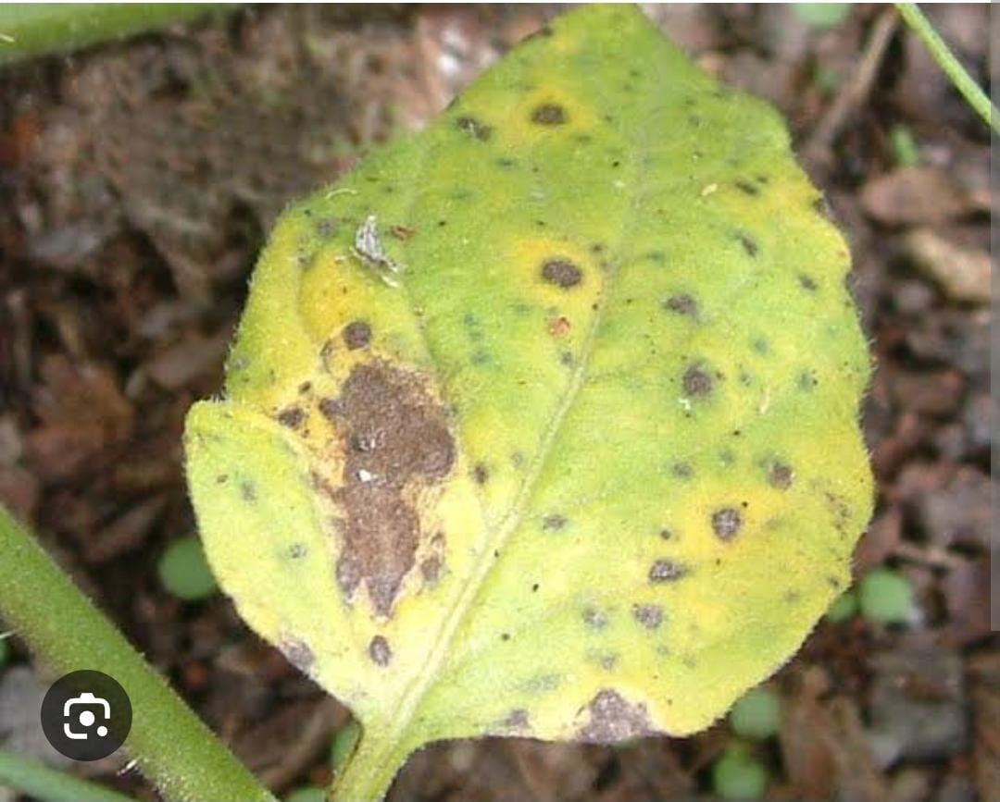

Irrigation system Design tools
- Zone planning
- Pipe sizing and Layout
- Sprinkler and Drip System Layout
- Pressure and Flow Rate
Farming is not just a way of life; it's the cornerstone of our civilization
From planting seeds to harvesting crops, farmers nurture the land and produce the food that sustains us all
The dedication and hard work of farmers are essential to feeding the world and preserving our environment for future generations.
| Crop | Optimum pH |
|---|---|
| Wheat | 6-8 |
| Corn | 6-7 |
| Soybean | 6-6.5 |
| Cotton | 7-8 |
| Tobacco | 5-6.5 |
| Sugarcane | 6.5 |
| Bean | 5.5 |
| Potato | 5-6 |
| Tomato | 5-7 |
| Pepper | 5.5-7 |
| Onion | 6-7 |
| Citrus fruits | 5-8 |
| Banana | 5-7 |
| Watermelon | 5.8-7.2 |
| Pineapple | 4.5-6.5 |
Find the best crops to grow based on your region's conditions.
Choosing the right crop depends on several factors:
| Crop | Ideal Conditions | Best Planting Season |
|---|---|---|
| Wheat | Loamy soil, temperate climate | Spring and Fall |
| Rice | Clayey soil, warm and wet climate | Summer |
| Maize (Corn) | Sandy loam soil, moderate climate | Spring |
| Tomatoes | Well-drained soil, warm climate | Late Spring |
| Potatoes | Loose, well-drained soil, cool climate | Spring and Fall |
| Carrots | Sandy soil, cool to moderate climate | Spring and Fall |
| Soybeans | Fertile, well-drained soil, warm climate | Spring |
| Sunflowers | Well-drained soil, warm and sunny climate | Spring |
| Peppers | Well-drained soil, warm climate | Late Spring |
| Lettuce | Rich, well-drained soil, cool climate | Spring and Fall |
| Cucumbers | Well-drained soil, warm climate | Summer |
| Onions | Fertile, loose soil, cool to moderate climate | Spring |
| Barley | Well-drained soil, temperate climate | Spring and Fall |
| Beans | Well-drained soil, moderate climate | Spring and Summer |
| Spinach | Fertile, well-drained soil, cool climate | Spring and Fall |
Pest and disease management is crucial for maintaining healthy crops and ensuring agricultural productivity. Effective management strategies involve identifying potential threats and implementing control measures to mitigate their impact.
Effective pest and disease management strategies include:
Blight is a rapid and complete chlorosis, browning, then death of plant tissues such as leaves, branches, or floral organs. Accordingly, many diseases that primarily exhibit this symptom are called blights.
Bacterial blight first appears on leaves as small, water-soaked spots, light green areas, or both.
As these spots enlarge, the tissue in the center dies and turns brown. These irregularly shaped spots are bordered by a lemon yellow ring, which serves as a diagnostic symptom of common bacterial blight.
Heating small amounts of soil to kill disease organisms is practical for potting plants and growing seedling transplants.
Keep gardens weed free.
Water requirement calculators are essential tools used to estimate the amount of water needed by plants or crops. They help farmers, gardeners, and landscapers optimize water use, ensuring that plants receive adequate hydration without overwatering.
Different plants have specific water needs. For instance, a water-intensive crop like rice requires more water than drought-tolerant crops like cacti or succulents.
Soils vary in their water retention capacities. Sandy soils drain quickly, requiring more frequent watering, while clay soils retain water longer and need less frequent irrigation.
Climate factors such as temperature, humidity, and rainfall play a crucial role in determining water requirements. Higher temperatures and lower humidity levels increase water evaporation, thus increasing water needs.
Plants have varying water requirements at different growth stages. Young plants or seedlings usually need more frequent watering compared to mature plants.
Irrigation system Design tools